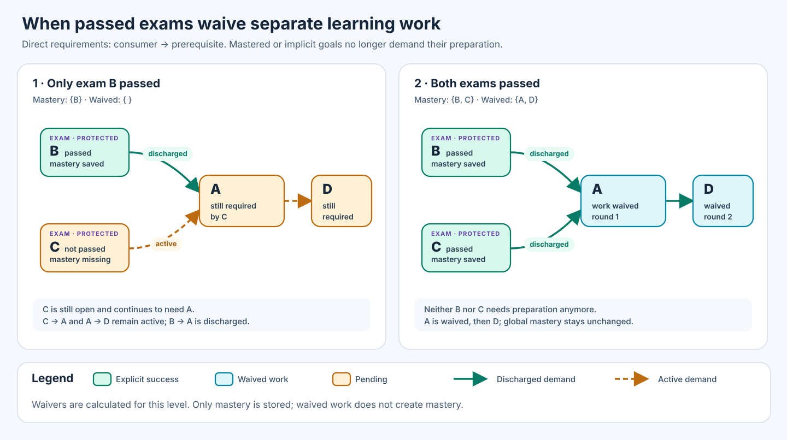

Assessment-Gated Completion and Prerequisite Discharge
Binding product decision, 31 October 2026. SkillPilot derives whether learning work is still needed from the skill graph and the existing binary mastery state. The following three rules replace the earlier pilot's manually reviewed waiver profiles:
- When any goal is mastered, it no longer demands its own
requiresprerequisites. The source or age of that valid mastery does not matter. - An unmastered goal which no other unfinished goal needs is implicitly completed, unless it is a final assessment. Its own prerequisite demand then also disappears. Repeat until stable.
- Every final assessment in the applicable learning scope is directly addressable. Missing prerequisite mastery does not prevent an intentional assessment attempt. Choosing useful assessments from the complete set is a discovery and interaction problem, not another eligibility rule.
Mastery remains the only persisted outcome per atomic goal:
mastery ∈ {0,1}. Implicit completion is calculated, never written as mastery,
never accepted as a second pass, and never stored in an outcome registry.
The implementation document
separates local implementation, verification and deployment evidence.
Generalisation without manual waiver profiles
There is no per-assessment profile, waivableGoalIds list, coverage grant,
additional qualifying result or "preparation only" flag in the general
contract. In particular, a passed assessment is not needed to enable
implicit completion: mastery of an ordinary goal also ends its preparation
need. Task quality and the ordinary grading contract still determine when
mastery may be saved; they do not introduce a second acceptance test.
The earlier model combined preparation discharge with certification of every prerequisite competence. That was the conceptual error. Implicit completion states that separate work is no longer needed in the specified scope; it does not certify each competence. Historical pilot profiles and their reviews may remain as immutable evidence, but are not runtime prerequisites for this rule.
1. Decisions and learner experience
The Cockpit distinguishes explicit mastery, implicit completion and remaining work without creating three stored goal results. Its compact tree icon explains "Für diesen Abschnitt nicht mehr erforderlich" in a tooltip. It must not claim "passed examination" when an ordinary mastered goal ended the need. Mastery bars and mastered-goal counts retain their existing meaning.
The calculation runs without selecting a special profile or starting a coach session. The default context is the complete Personal Curriculum. Choosing a structural section deliberately creates a section-specific view; opening or collapsing tree nodes does not. Learners may still study implicitly completed goals voluntarily under their ordinary mastery contract.
Final assessments remain open until mastered, even if they have no consumers. All other goal types follow rule 2, including orientation and memorisation. Their explicit mastery workflows remain unchanged. A memory goal becoming unnecessary does not mark its cards recalled; an orientation goal becoming unnecessary does not fabricate a motivational interaction.
A consequence is intentional: a finite valid scope with no final assessment is entirely explicitly or implicitly completed. An ordinary terminal goal with no consumer is implicitly completed even at zero mastery. Do not defeat this rule by silently inventing a protected category or an assessment anchor. If content is meant to remain a compulsory endpoint, its assessment role must be authoritatively represented in the graph.
2. Resolve the scope and direct requirements
Fix the curriculum generation and committed Personal Curriculum. Let \(T\) be the unique applicable atomic targets of the chosen completion scope. The scope comes from an authoritative program/composition subtree or the complete Personal Curriculum. Resolve authored elective choices and projection roles; neither a display filter nor a temporary Level-3 focus silently changes \(T\).
Canonical goal identities remain stable. Expand required clusters into their atomic obligations and inherit cluster requirements according to the existing graph definition. Apply the authoritative composition semantics, including direct atomic goal entries. Include the prerequisite closure, with hidden and cross-landscape support, without promoting supporting goals to targets. Write \(V_H\) for this complete atomic context.
Let
An arrow points from consumer to prerequisite. Reject missing references, identity conflicts, containment cycles, raw requirement cycles and cycles in the reachable expanded atomic graph. An invalid calculation is unavailable, not an empty scope or a completed curriculum.
Do not replace \(F_H\) by its static transitive closure. In \(C\to B\to A\), mastery of B stops demand at B. The additional authored edge \(C\to A\) would preserve a separate direct demand for A while C is open. These graphs therefore have different work-discharge semantics. Neither transitive closure nor transitive reduction is a neutral rewrite here. Indirect demand exists only along paths through still-needed, unmastered goals.
Let \(Q_H\subseteq V_H\) be the authoritative final-assessment goals. The current
runtime uses the existing exam/assessment classification (exam, assessment
semantic kinds and compatible examData encoding), never title matching or
coveredGoalIds. A practice task which is merely an alternative form must not
silently become another required goal. Authoring and scope selection decide
which goal identities participate; runtime does not invent a new selector.
An assessment already included as a supporting prerequisite remains an
assessment obligation; hiding it does not make it implicitly complete.
3. Mastery and active demand
Let \(M\) be the current mastered atomic goals and \(E=M\cap V_H\) their restriction to the context. This uses the ordinary authoritative goal outcomes, including the normal verified-recall resolver for card goals. Existing mastery counts immediately, including mastery obtained before this scope was chosen.
For a tentative set \(X\) of explicitly or implicitly completed goals:
Completing a goal removes its outgoing demand. A mastered B does not forward an incoming demand from C to B's former preparation A. A separate open consumer of A still keeps A necessary. No authored graph edge is deleted in storage.
4. Derive implicit completion with a least fixed point
The operator is monotone and inflationary on a finite set, so iteration reaches its least fixed point. Every new implicit completion can remove further demand. There is no special rule for the empty consumer set: a non-assessment terminal is correctly implicit. Conversely \(I_H\cap Q_H=\varnothing\); no assessment is implicitly passed. Mastery and \(I_H\) are disjoint by definition.
An equivalent linear algorithm starts at all unmastered assessments and visits their direct prerequisites, stopping whenever it reaches a mastered goal:
needed = empty set
pending = all assessment goals without mastery
while pending is not empty:
goal = pop(pending)
if goal is mastered or already in needed: continue
add goal to needed
push its direct expanded prerequisites
implicit = context goals minus mastered minus needed
On a valid DAG this is exactly the fixed point above and costs \(O(|V_H|+|F_H|)\) time and memory. It does not materialise all transitive pairs. An implementation can retain a deterministic open-assessment witness for each needed goal. An implicit explanation says that no active preparation demand remains; it must not fabricate a passed-assessment witness.
5. Worked examples and level completion
| Graph and mastery | Result |
|---|---|
| Assessment C requires B, B requires A; none mastered | C, B and A remain needed. |
| Same graph, ordinary B mastered | C remains open; A is implicitly complete. |
| Same graph plus direct C → A; B mastered | A remains needed directly by C. |
| Assessments B and C both require A; only B mastered | C still needs A. |
| Same graph, both assessments mastered | A becomes implicit; its unused preparation can follow. |
| Ordinary terminal Z with no consumer and no mastery | Z is implicitly complete. |
| Assessment Q with no consumer and no mastery | Q remains open and can be started directly. |
| Scope contains no assessment | All unmastered goals become implicit, with no mastery writes. |

The completion condition is
For this finite DAG contract, all assessment obligations being mastered is also sufficient: without open assessment anchors, every remaining non-assessment goal eventually becomes implicit. The target set still governs counts: supporting goals do not enter the completion denominator.
A goal can be implicit in a completed Sek-I section yet needed in a broader Sek-I-plus-Sek-II context. That is not a contradiction or a mastery change. The UI always names the scope and recomputes when its authoritative inputs change. A focus change may reorder suggestions, but must not alter the chosen section's obligations.
6. Assessment access, discovery and continuation
Every applicable assessment is directly selectable without prerequisite mastery, including outside the old pilot. The start is deliberate and retains the existing authentication, learner revision, session ownership, task availability and grading checks. A failed attempt writes no negative pass record and does not remove existing mastery. Detailed AI grading, scores, deductions and feedback remain part of the conversation under the ordinary exam workflow.
Discovery and starting are separate. Read-only discovery writes no workflow, focus or mastery. An accepted selection binds the exact assessment to the current learner and supported coach session. Unsupported providers cannot borrow that binding. A display limit may bound a page or a coach suggestion batch, not permanently remove assessments from the accessible set.
The Cockpit provides search and paginated rendering over the complete offered set. Recommendations can prefer the active goal's structural section and the current focus, while the authoritative calculation stays on the complete chosen scope. The coach uses backend-published choices; intelligent ranking and navigation through a large offer can be improved independently of the three completion rules. A single Skalarprodukt example is no longer a valid substitute for this general offer.
Normal required-work recommendations omit implicitly completed goals. Raw
prerequisite availability remains separate for deliberate voluntary learning;
a derived status never writes mastery to satisfy an access check. The Cockpit
preference useAssessmentShortcuts controls direct assessment offers, not the
truth of implicit completion or already valid plan credit.
7. Recalculation and adoption requirements
All consumers use one backend calculation: Cockpit, coach, plan status and continuation. A request reads consistent mastery and structural inputs. Recompute after mastery, scope or curriculum changes. Increasing mastery cannot reopen work for unchanged graph/scope; corrected or removed mastery can. Never feed yesterday's implicit set back as today's mastery input.
Only immutable structural compilation is cached, bounded by context, node and edge budgets. Keys include curriculum generation, authoritative projection, scope targets and semantics revision. No learner-result cache becomes an additional source of truth. Discovery does not compile every possible section on each request; selected/default contexts share prepared or bounded cached normalisation. Configuration and input errors remain visible.
Plan integration
For fixed, deduplicated plan baseline \(G\), default plan IST is
For automatic plan credit, \(H\) is the complete Personal Curriculum, not merely G or the current dated plan. A plan is a temporal selection, not a new completion contract: a preparation-only plan must not become completed while an assessment elsewhere in the Personal Curriculum still needs it. First compute \(I_H\) over all authoritative Level-2 targets and their requirements, then intersect with G. Multiple plans still deduplicate each counted goal. Real cross-subject prerequisite demand is preserved; quotas and balance remain separate by subject. A deliberately chosen smaller completion section may show its own implicit set, but does not redefine plan credit. Supporting goals outside G do not increase IST.
The Cockpit setting "Nur explizit erreichte Lernziele zählen" defaults to off. When selected, IST is \(|G\cap M|\). G, scheduled quotas and dates stay fixed; implicit work does not become compulsory again merely because counting changes. Actual completion events and the current-period H input still describe only reliably dated explicit outcomes, never fabricated dates of implicit completion. See the shared plan contract.
Acceptance evidence
Tests must cover the mastered-intermediate stop, a separate direct edge, shared prerequisites, unreferenced ordinary terminals, assessment-only terminals, empty assessment sets, projection and scope boundaries, revocation and direct non-pilot exam starts. Verify no writes during discovery/evaluation, no forged or stale start, preserved session ownership, complete discovery beyond one page, plan deduplication, opt-out and signed preference export/import. Machine tests establish these contracts; they do not establish assessment quality, human usability or learning effectiveness. Deployment and real-coach acceptance remain separate from local test results.